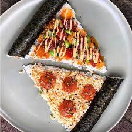

Pues mis gustos se podrian definir en hacer casi de todo jaja, bueno especificamente me gusta hacer deporte, como ya se habra notado tambien me fascina el espacio exterior, el saber que puede haber mas alla.

Gustos en Comida jsjs:
Me encanta el sushi
Adoro la pizza
Tal vez es un gusto raro pero me gusta mucho el brocoli con salchicha y queso jsjs
Y me gusta el pollo rostizado xd ah y los cortes de carne
Deportes:
Futbol
Parkour
Natación
Atletismo
Ajedrez
Voleibol
Aunque no sea tan bueno en la mayoria de deportes me esfuerzo